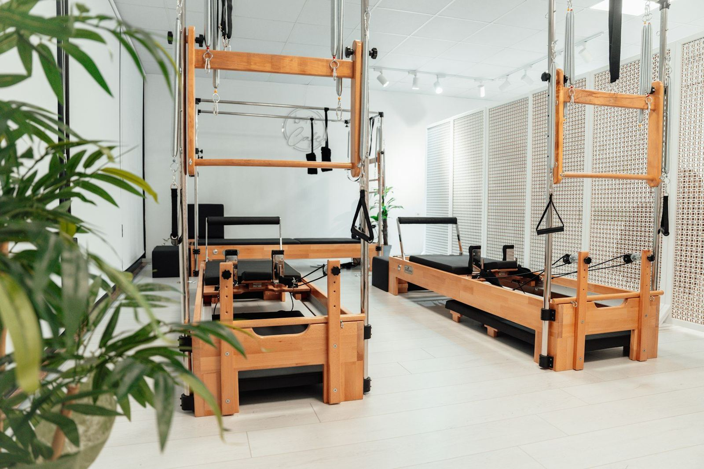
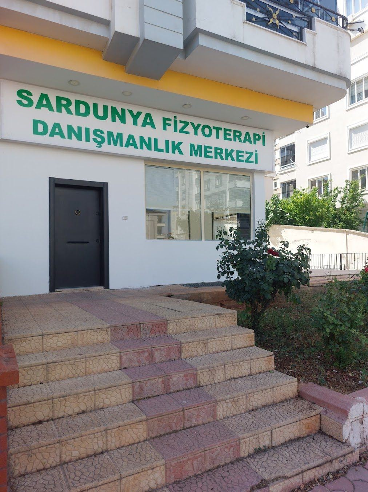

Haftanın yedi günü fizyoterapi
Mesut Ateşsönmez Caddesi'nde 08:00-20:00 arası rehabilitasyon ve egzersiz programları.


Tedavi alanları
Ağrının kaynağına yönelik, egzersiz temelli rehabilitasyon.
Bel ve boyun ağrısı
Fıtık, düzleşme ve kas spazmı kaynaklı ağrılar için egzersiz ve manuel terapi programı uygulanır.
02Spor yaralanmaları
Bağ, menisküs ve kas yaralanmalarında sahaya dönüşü hedefleyen rehabilitasyon planlanır.
03Ameliyat sonrası rehabilitasyon
Diz, kalça ve omuz ameliyatları sonrasında hareket açıklığı ve kuvvet adım adım geri kazandırılır.
04Manuel terapi
Eklem ve yumuşak dokulara yönelik el teknikleriyle ağrı ve hareket kısıtlılığı ele alınır.
05Kuru iğneleme ve bantlama
Tetik noktalar ve kas gerginlikleri için destekleyici uygulamalar tedaviye eklenebilir.
06Klinik pilates
Fizyoterapist eşliğinde, ağrı ve postür odaklı kontrollü pilates seansları yapılır.
Ağrınız nerede?
Bölgeyi seçin, size uygun olabilecek tedavi yaklaşımını görün.
Rehabilitasyon süreci
Değerlendirmeden ev programına kadar her adım planlı.
Değerlendirme
Ağrı, hareket açıklığı, kuvvet ve postür ayrıntılı olarak incelenir.
Tedavi planı
Şikayetinize ve günlük hayatınıza uygun seans sayısı ve yöntemler belirlenir.
Seanslar
Manuel terapi ve egzersizlerle her seans bir önceki üzerine kurulur.
Ev programı
Kazanımları korumanız için evde uygulayacağınız egzersizler öğretilir.
Size uygun bir saat bulalım
Formu doldurun ya da arayın, randevunuzu birlikte planlayalım.